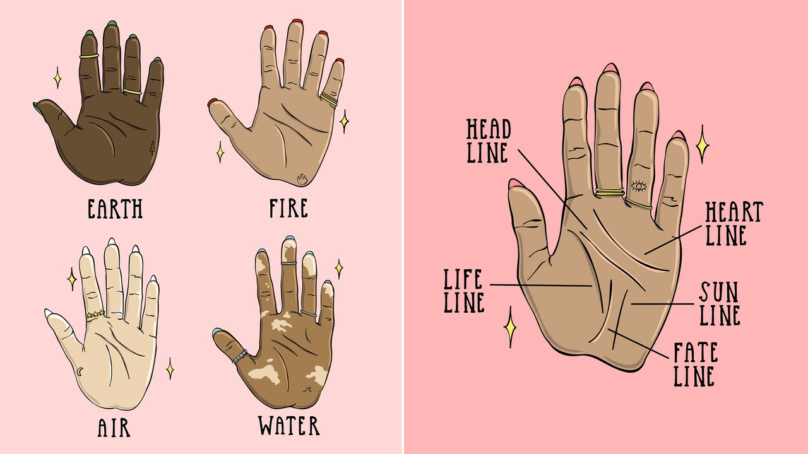

What The Lines On Your Hand Mean:
Head line:
If you have a very long head line across your palm it indicates that you are/will be a very successful individual and not the cowardly type. May have a tendency to be selfish.
Long and straight — Indicates a versatile, complex individual who is untrustworthy.
A short head line indicates someone with a short attention span who tends to be restless.
Heart line:
If your heart line is short (only extends to the middle finger) or absent, it shows you are self-centered, ruthless, narrow-minded and like to act arbitrarily without thinking about the consequences. Thus, you are easy to be ostracized by the people around and become lonely. For your love life, it’s also not smooth.
If your heart line is very long which extends to the edge of the palm from both side (as in the picture shows), it indicates you are too straightforward, would rather break than bend. In career, you could get success although you undergo a lot of hardships. Only if your career line is clear without broken, you are fit to engage in speculation. In love aspect, the man is usually romantic and henpecked. The women are mostly faithful to their love. However, you usually have some major upheavals during the life. Once split up with boy/girl friend, or marriage breaks down, you will get hurt seriously.
If your heart line curves upwards, it indicates you have a great verbal dexterity. When meeting your favorite object, you are good at creating romantic atmosphere and speaking out your love to him/her;
Owning a downward curved line, it indicates a negative and weak character. You usually give others an uneasy feeling because you don't dare to chase and express your love feelings. So, there are twists and turns with your love relationship or marriage life.
A straight heart line shows you are stable, conservative, mild, extremely affable and approachable. In love, you are usually shy and play a passive role in the relationship. If the line is clear, moderate in length and without donut of break, you could have a stable and harmonious family.
Life line:
If other lines of your palm are clear and only the life line is absent, it's not a good sign. It indicates a poor health and a short life. You are easy to get sick or have accidents during the whole life.
A long, deep, tender and rosy life line stands for that you are highly resistant to disease and full of vitality.
A short life line shows you are susceptible to illness. It doesn't mean a short lifespan. In personality, you are a person of integrity and down to earth but a little timid. Besides, other people can easily influence or control you in life.
A thick and clear life line indicates that you are suited to a life of physical labor and are good at sports.
Sun Line:
If you find your sun line is very short or absent, it indicates that you enjoy an ordinary life without name or fame during the whole life. If it’s absent, you are difficult to get success no matter how hard you try. If it’s too short, it shows you couldn’t enjoy the joys until the old age. In general, people working in enterprises and institutions usually have this kind of short line.
A clear sun line indicates a good taste for art or literature.
A narrow line shows a frustrated life and a hard marriage. The career in the youth and middle age is usually common without any big achievement. Till the old age, you could become outstanding.
Fate Line:
Absent of fate line doesn't mean you don't have career during the life. It indicates you always change your job and don’t have a permanent occupation in your life. This may be caused by your careless character. Or you couldn’t find a job that you are interested in.
A deep, straight and long fate line which begins from the base of the palm and extends to the Mount of Saturn (under the middle finger) indicates a strong ability to start and run your own career or business. You usually emphasis on credibility thus could have a successful career with endlessly strives;
If the line becomes narrower and thinner gradually from the middle part of the palm, it indicates a smooth career fortune during the younger days and a worse fortune after the middle age.
Types of Hands: The Four Elements:
Earth Hands:
Square palms and short fingers.
Firm, solid and fleshy.
People with earth hands are practical, logical and grounded.
Fire Hands:
Long palm and short fingers.
People with fire hands are passionate, confident and industrious. They may lack empathy and tactfullness.
Air Hands:
Square palms and long fingers. Their hands are often boney with potruding knuckles and spindly fingers.
This hand type signifies intellectually curious individuals with innate analytical abilities and communication skills. Those with air hands are easily distracted and, if not stimulated, can become anxious or edgy.
Water Hands:
Water hands are distinguished by their long palms and long fingers. These hands are often soft to the touch and a bit clammy, with an overall narrow appearance.
Those who have them are in tune with their emotions, intuition, and psychic ability. Fueled by compassion and imagination, these individuals are often creatives. They're also extremely sensitive and their feelings are easily hurt, causing undesirable interpersonal stress.
The Mounts and Plains

After you've identified the hand type, begin observing the palm's natural topography. Fleshy areas called mounts and plains are related to different life themes.
Mount of Jupiter:
Located at the base of the index finger (and above the Mount of Inner Mars), the Mount of Jupiter symbolizes confidence, ambition, and leadership. It reveals a connection to the spiritual realm, along with divine aptitudes.
Mount of Saturn:
The Mount of Saturn is located at the base of the middle finger. This area corresponds with wisdom, responsibility, and fortitude. It reveals an individual's integrity, as well as their deep understanding of the ups and downs of life.
Mount of Apollo:
Found beneath the ring finger, the Mount of Apollo derives its name from the sun god of classical antiquity. Within palmistry, this region of the hand corresponds with an individual's optimism, vitality, and essence. Just as zodiac sun signs expose individuals' innate spirits, the Mount of Apollo showcases artistic inclinations, happiness, and success.
Mount of Mercury:
Situated underneath the pinky finger, the Mount of Mercury is connected to communication and intelligence. This region is linked to wit, adaptability, and social skills, revealing an individual's strategic mind and resourcefulness.
Mount of Luna:
Named after the ancient Roman goddess who personified the moon, the Mount of Luna symbolizes imagination, intuition, and psychic powers. Located toward the bottom of the palm on the pinky side, this area reveals an individual's empathy, compassion, and imagination. While the moon illuminates the darkness, the Mount of Luna is linked to the insight found within magic.
Mount of Venus:
Located at the base of the thumb, the Mount of Venus is linked to love, sensuality, and attraction. This zone showcases natural magnetism, as well as an individual's emotional connection to romance. Sexuality, passion, and indulgence are all under the auspices of this region
Inner Mars, Outer Mars and the Plain of Mars
In palmistry, Mars covers a lot of ground. Named for the Roman god of war, these three distinctive sections represent aggression, resilience, and temperament, respectively. Inner Mars, also referred to as Lower Mars, is located above the thumb, and it symbolizes physical strength and bold tenacity. Outer Mars, or Upper Mars, represents perseverance and emotional bravery. The Plain of Mars occupies the lower center of the palm and demonstrates how these two aforementioned qualities are balanced. Because the Plain of Mars is usually flat, its significance is determined by which lines occupy this section.